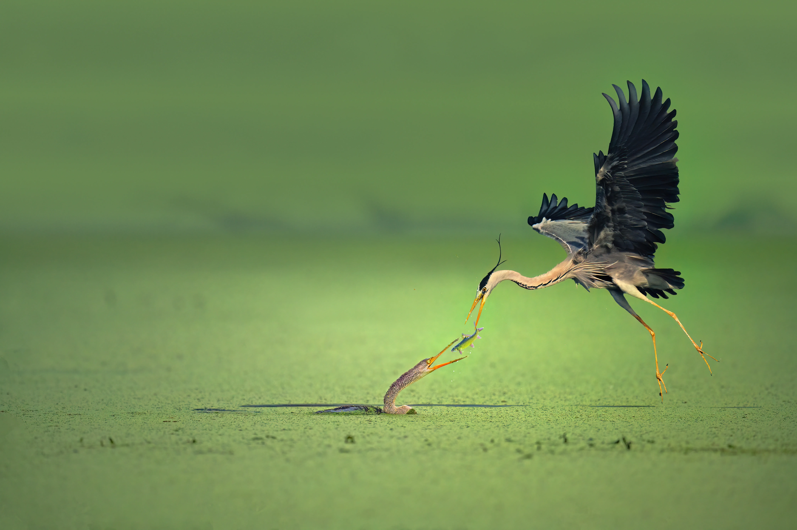
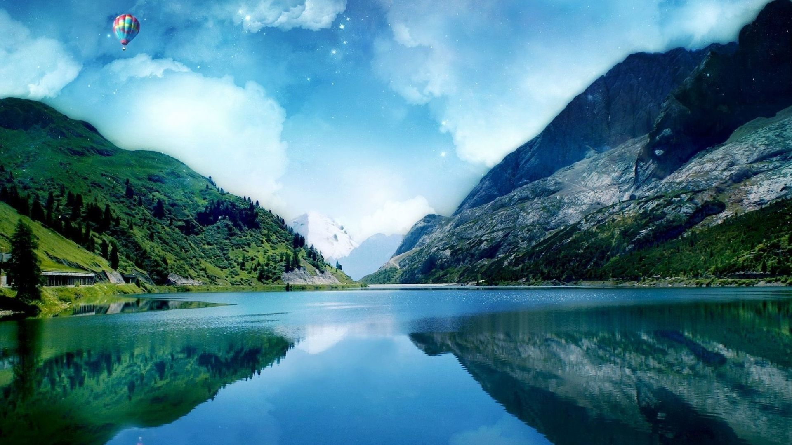
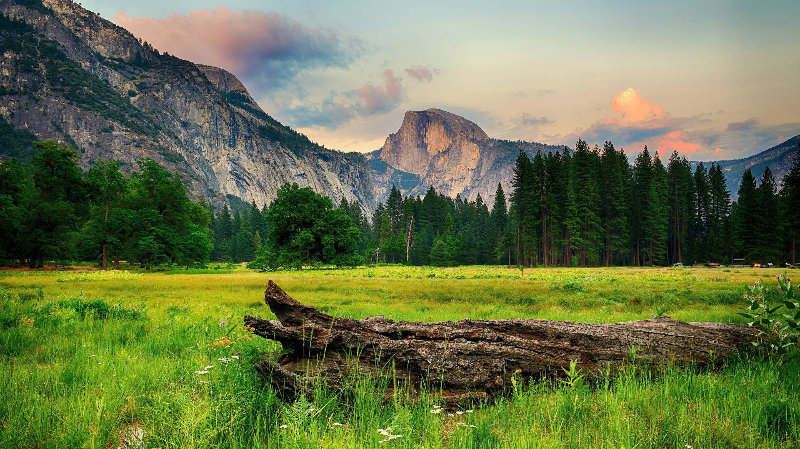
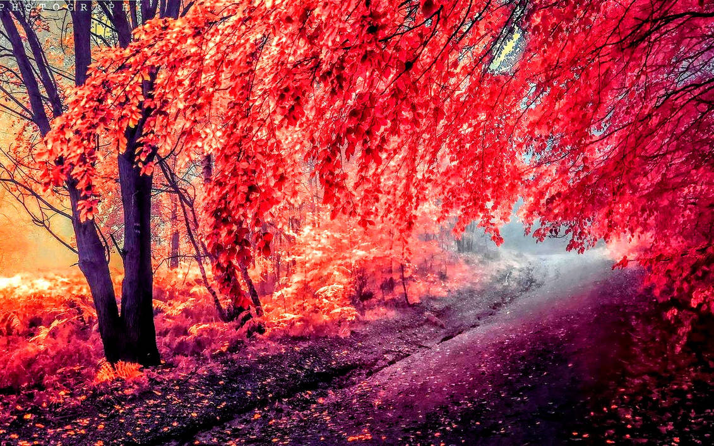
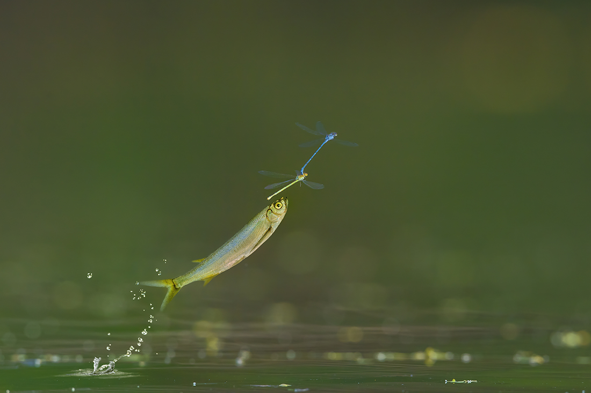

Based in India
Chhatrapati Sambhajinagar, Maharashtra

Featured Work
Wild by Nature.
Intimate moments from the wild, captured with raw details, patience, and absolute respect for nature.
View Full Screen



For Brands & Agencies
Book Assignment
Visuals That Elevate Impact.
Visual campaigns for conservation and editorial impact. I deliver authentic, raw imagery that connects with audiences globally and drives meaningful change.
50+
Awards &
Recognitions
Recognitions
25+
Countries
Explored
Explored
500+
Assignments
Completed
Completed
100k+
Stunning Frames
Captured
Captured
Latest Work
Directly from the field